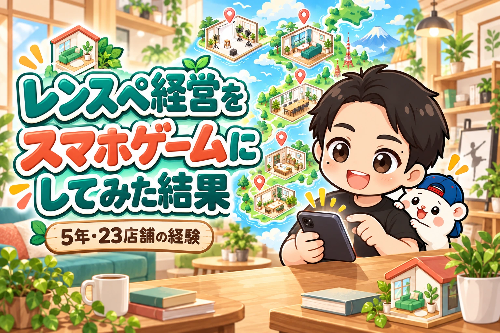
5年・累計23店舗のレンスペ運営経験を、スマホで遊べるゲームに詰め込みました。
名前は「ゲームで学ぶレンスペ経営」。
無料で遊べます。
スマホのブラウザで開けば、そのまま始められます。
※以下はゲームの実画面を使ったデモプレイです。画面は撮影時点のもので、物件・費用・収支はゲーム内の例です。画像をタップすると拡大できます。
舞台は、日本全国。
日本地図から都道府県を選び、駅を選び、自分のレンタルスペースをつくっていきます。
部屋をかわいくするのは楽しい。
でも、家具を買えばお金が減るし、開業したら清掃も必要。
売上が入ったら、家賃などを引いて利益を確認します。
かわいい見た目に、かなり現実的な経営を入れました。
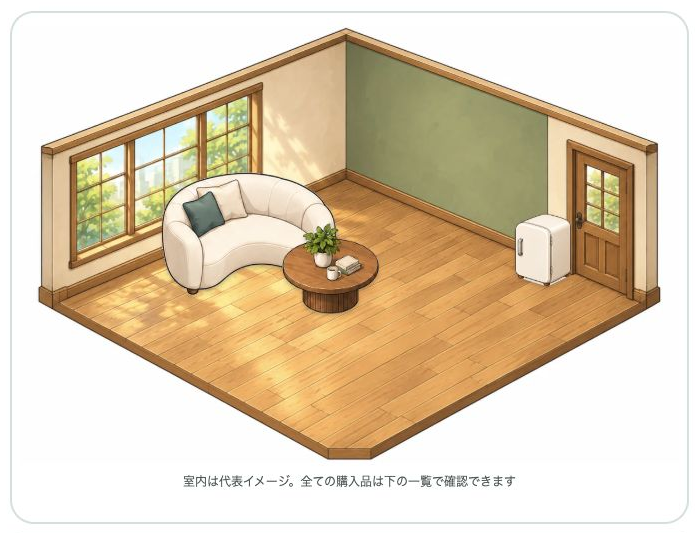
▼ゲームで学ぶレンスペ経営を無料で遊ぶ
https://rental-space.net/game/
全国8,977駅から、出店先を選べます
最初に決めるのは、どんな部屋をつくるかです。
パーティースペース、撮影スタジオ、ダンススタジオ、貸会議室。
この4ジャンルから選べます。
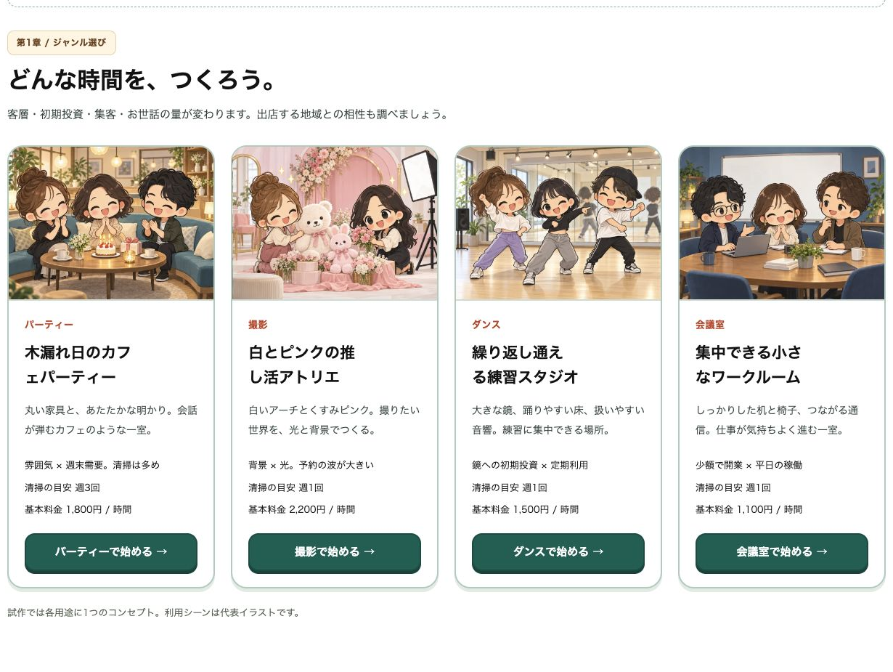
次は、出店する場所。
日本地図をタップすると、都道府県を選べます。
北海道から沖縄まで、47都道府県。
収録した駅は、8,977駅です。
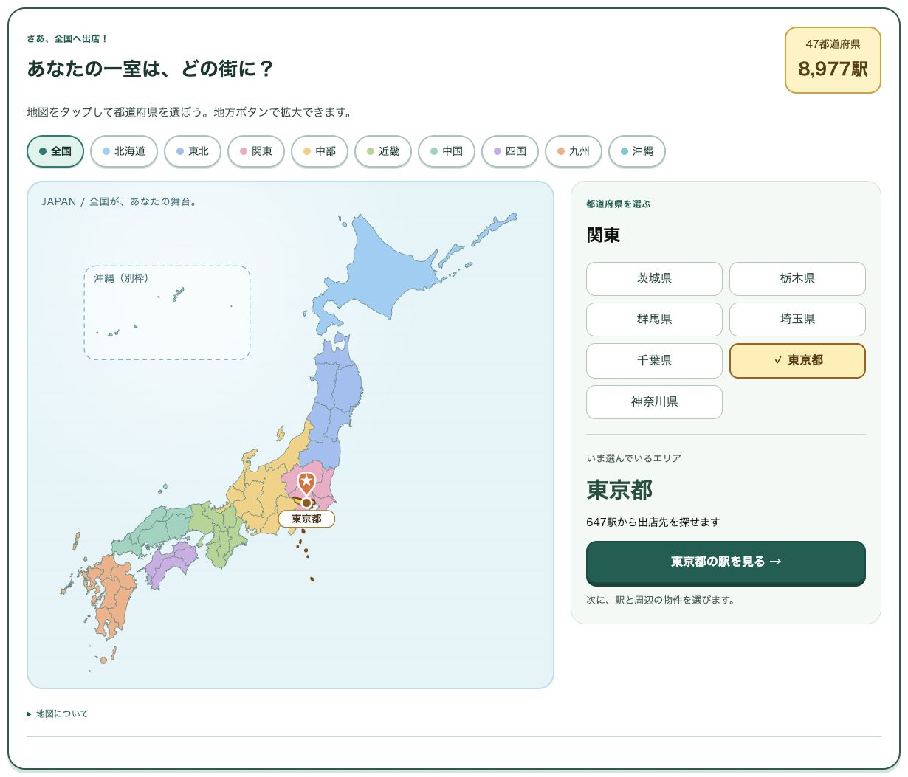
「せっかくだから新宿でやってみよう」
「ぼくなら地元で、家賃を抑えたい」
そんな選び方もできます。
駅の乗降客数も表示します。
国土交通省の2024年度データをもとにした数字です。
全国の全駅を網羅しているわけではなく、人数が分からない駅もあります。
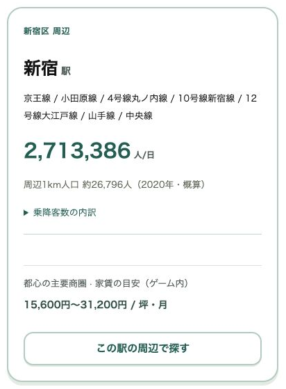
知っている駅が出てくると、部屋づくりを想像しやすいですよね。
ただ、ゲーム内の物件や家賃、需要は学習用の設定です。
実際に募集中の物件や、その街での収益予測ではありません。
敷金も礼金も、ちゃんとかかる
ゲーム内の開業資金は200万円です。プレイ料金は無料です。
このお金で物件を借り、家具や備品をそろえ、開業していきます。
物件ごとに、家賃や広さ、坪単価が違います。
敷金・礼金も一律にはしていません。
「月の家賃は払えそう」でも、契約時にまとまったお金が出ていく。
そこも考えて選びます。
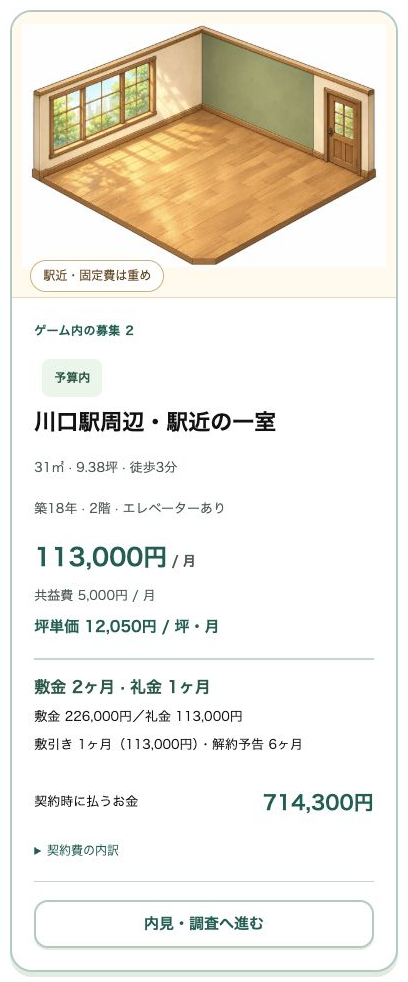
内見では、部屋の状態や使い方を確認。
ダンスなら、音や振動、階下の用途も気になります。
そのあとに競合を調べ、収支を試算して、契約するかを決める。
契約しても、すぐにはオープンできません。
電気や水道、Wi-Fi、必要な内装、家具・備品の購入と設営。
掲載する写真や予約サイトの準備もあります。
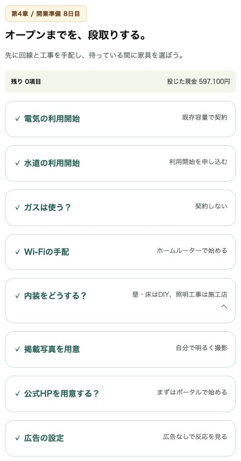
しかも、準備している間にも家賃はかかる。
「このソファも欲しい。でも、お金を残しておかないと」
部屋づくりに夢中になっているところへ、現実が入ってきます。
ここはレンスペの経営ゲームなので、外せませんでした。
オープンしたら、お客さんから電話
部屋ができて、写真も撮れて、予約が入った。
ここからは、お客さんに気持ちよく使ってもらうための運営が始まります。
ゲーム内でも、お客さんから連絡が来て、対応を選ぶ場面があります。
「すみません、鍵の場所が分からなくて…」
そんなときは、写真を送って案内する。
無事に入れたことを確認できると、こちらもひと安心です。
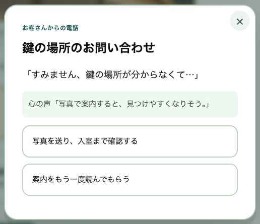
「次のお客さんが来る前に、部屋を整えておこう」
清掃や消耗品の補充も、次の利用を気持ちよく迎えるための仕事です。
すでにレンスペをやっている人には、「ああ、こういうことあるな」と感じてもらえたら。
これからの人には、開業した後に何をするのかを知ってほしい。
そんな日々のやり取りも、ゲームに入れました。
清掃を外注さんにお願いすることもできます。
スキル、アイデア、まじめさを見て、誰に任せるかを選びます。
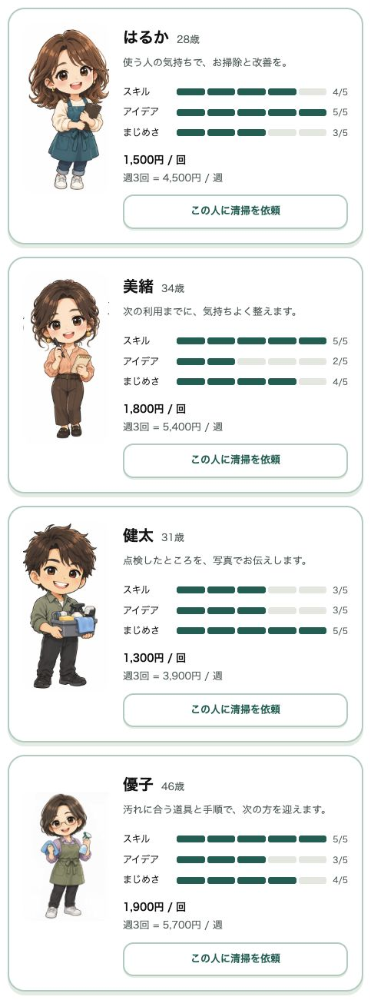
自分でやれば、外注費を抑えられる。
任せれば、費用はかかりますが、自分で動く手間を減らせます。
誰に、どこまでお願いするかも経営の判断です。
お金をかけなくても、喜んでもらえる
高い家具を買う以外にも、できることがあります。
たとえば、写真つきの入室案内。
Wi-Fiにつなぐための案内。
家具や備品を元に戻すときの見本写真。
大がかりな内装をしなくても、使いやすさは変えられます。
ゲームにも、こうした改善を入れました。
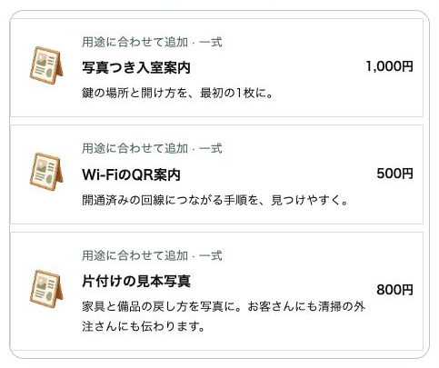
ぼくが大事にしたかったのは、お客さんの気持ちが見えることです。
「この部屋、かわいい！」
「写真のとおりに来たら、迷わなかった！」
自分の工夫に、お客さんが喜んでくれる。
これはゲーム内のお客さんのセリフですが、目指したい経営は同じです。
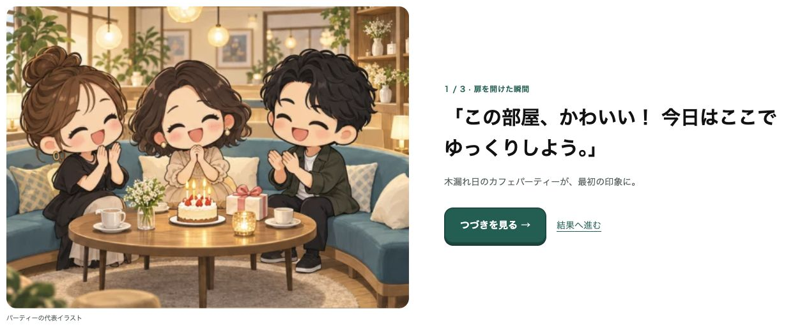
利益を出したい。
自分の好きな部屋もつくりたい。
来てくれた人にも、気持ちよく使ってほしい。
その3つを考えながら、自分の一室を育ててもらえたらと思っています。
売上が増えても、まだクリアではない
クリア条件は、開業からゲーム内の2年以内に初期投資を回収することです。
部屋を借りるときに払ったお金。
内装や家具、備品に使ったお金。
それを、経営を続けながら取り戻せるか。
売上だけを見ると、うまくいっているように感じるかもしれません。
でも、家賃や清掃費などを払った後に、いくら残っているか。
最初に使ったお金を、どれくらい回収できたか。
月ごとの数字と累計で確認します。
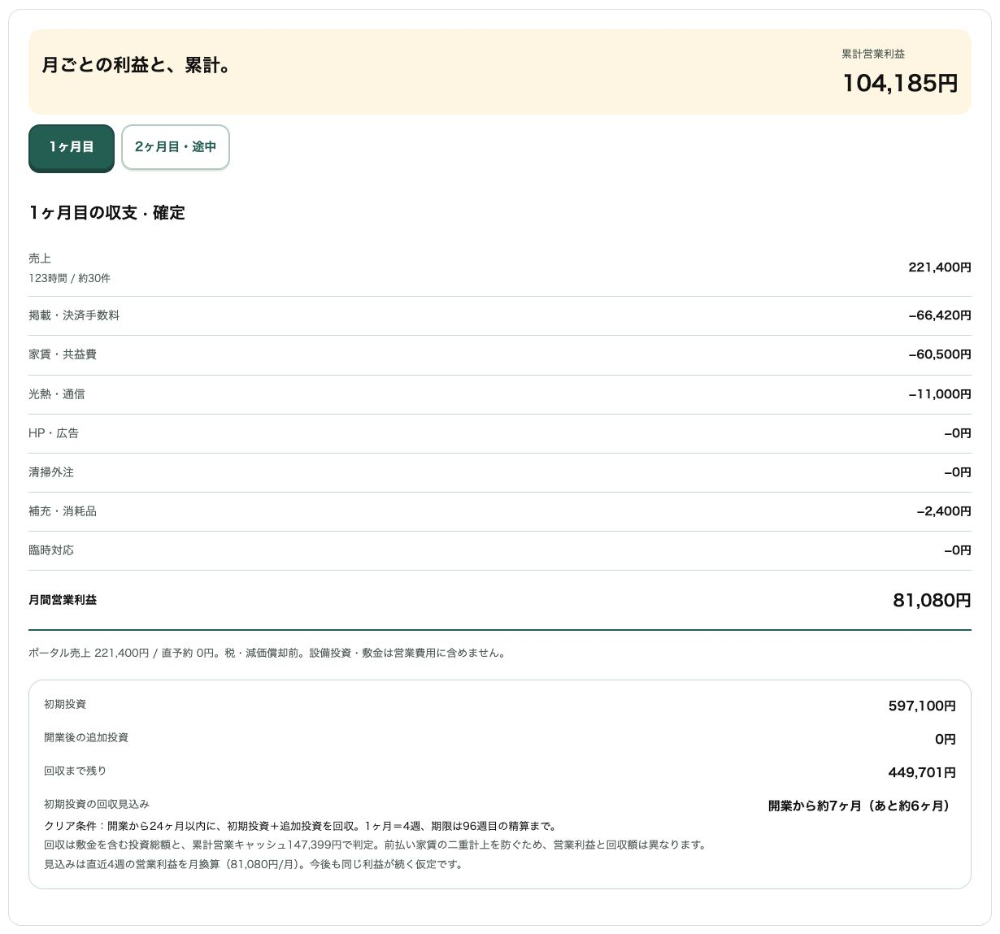
1ターンは1週間。
自分で翌週や翌月へ進められるので、現実に2年間待つ必要はありません。
期限までに回収できなければ、ゲームオーバーです。
もちろん、この2年はゲームのルールです。
現実でも同じように回収できる、という約束ではありません。
「次は家賃を抑えよう」
「違うジャンルなら、どうなるんだろう」
回収できても、できなくても、次の判断につながるゲームにしたいです。
ゲームの次は、自分の物件で考えてみる
ぼくは、物件探しから開業、清掃の外注、数字の見方まで、ブログや教科書に書いてきました。
今回は、それを自分で選んで体験できる形にしました。
これから開業する人は、最初の一室の予行練習に。
すでに運営している人は、別の街やジャンルへの挑戦に。
遊んでみて、実際の物件が気になったら、今度はその物件の条件で調べてみてください。
何を内見で確認するか。
競合をどう調べるか。
家賃や初期費用を入れると、利益はどれくらい残りそうか。
そのときに使える内見チェックリストや利益シミュレーションは、教科書の付録にまとめています。
ゲーム内からも、その場面に関連する学習内容へ進めます。
ゲームは、教材を買わなくても遊べます。
まずは一室、つくってみてください。
▼ゲームで学ぶレンスペ経営を無料で遊ぶ
https://rental-space.net/game/
あなたなら、どの街で最初の1部屋を開きますか？
▼もう1つの副業、AI社員だけのeBay輸出店の実録🐹
https://note.com/cham_ebay
▼ブログ(レンスペ×eBay、全記事まとめ)
https://rental-space.net
レンタルスペースの数字とやり方は、教科書にぜんぶ書いています。
レンタルスペース経営の教科書(公式サイト最安 ¥17,800)
https://rental-space.net/kyokasho/
※発売記念価格です。3部売れるごとに2,000円ずつ値上げします。